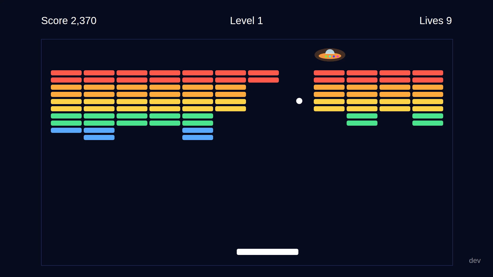

Breakoutfor Samsung TV
The arcade brick breaker for 2021 Samsung TVs. Plug a keyboard into the TV or pick up the remote, chip a hole through the wall and hit the UFO hiding behind it.
Download the app Source on GitHub
Free and open source. You install it in the TV's developer mode and sign it with your own Tizen certificate.

How it plays
Every level is a wall of thin bricks with a UFO gliding back and forth behind it. You don't have to clear the wall. You only have to reach the UFO.
Break through
Every brick you break scores, from 10 for blue up to 50 for red. Cut a gap and the ball gets into the space behind the wall.
Hit the UFO
The saucer slides left and right with its lights running through the rainbow. Touch it with the ball for 500 points: the rest of the wall dissolves and the next level begins.
Keep your lives
Each level gives you 10 lives. When you hit the UFO, your whole score is multiplied by the lives you have left, so a level without a dropped ball is worth ten times everything so far.

(3,900 + 500) × 7 = 30,800
Seven lives left on level 2. The UFO's 500 points go on first, then the whole score is multiplied by 7, and the wall dissolves.
- Three walls. A full wall, a checkerboard, and a pyramid under two rows of silver bricks that take two hits each.
- Then faster. After level 3 the walls come round again, and the ball starts 10% faster every time. It also picks up speed as a wall wears down.
- Lost every life? Retry the same level with the score it started with, start over from level 1, or go back to the title.
- Best score kept. Your best score stays on the TV. Short arcade beeps for every bounce; press M to mute them.
Controls
Plug any USB or wireless keyboard into the TV, or just use the remote. Hold a key and the paddle glides; let go and it stops.
Keyboard
- Move (hold)
- ←→ or AD
- Launch the ball
- Space or Enter
- Pause
- P
- Back
- Esc or Backspace
- Sound on/off
- M
- Menus
- ↑↓←→ then Enter
TV remote
- Move (hold)
- ←→
- Launch the ball
- OK
- Pause, back
- Back
- Menus
- ↑↓←→ then OK
Back always does something: during play it pauses, in a menu it closes it or goes back a screen, and on the title it asks before leaving.
Screenshots
Taken from the game itself at the TV's 1920×1080.

The title screen shows your best score and the controls. 
Level 3: a pyramid under two rows of silver bricks. 
Game over: retry the level, start over or go to the title.
Install it on your TV
Breakout isn't in Samsung's app store. You install it from a computer on the same network as the TV, with the tizen and sdb command line tools from Tizen Studio.
Turn on developer mode
On the TV, open Apps (App Settings on some sets), press 1 2 3 4 5 on the remote and switch Developer mode on. Enter your computer's IP address, then restart the TV. Some sets also want "Permit to install applications" from Tizen Studio's Device Manager before the first install.
Make a signing profile
A Samsung TV installs only signed apps, and a signing key should stay with its owner, so you sign Breakout yourself. Create a certificate profile in Tizen Studio's Certificate Manager. If a retail set turns it down, use a Samsung certificate with your TV's DUID registered.
Get the app folder
Download
breakout-tv-app.zipfrom the releases page and unzip it to get anappfolder. Or build it from the source, which puts it indist/app:git clone https://github.com/cocodedk/breakout-tv.git cd breakout-tv npm ci npm run stage
Package, install, play
Use
appinstead ofdist/appif you unzipped the download.tizen packagenames the fileBreakout.wgt: rename it toapp.wgtbefore you install.-ttakes the device namesdb devicesprints.tizen package -t wgt -s MyProfile -- dist/app sdb connect 192.168.1.50:26101 tizen install -n app.wgt -t MyTV -- dist/app tizen run -p BreakoutTV.Breakout -t MyTV
Under the hood
A Tizen TV app is a website in a zip file with a config.xml. Breakout is plain HTML, CSS and JavaScript running in the TV's own browser, with no network access at all.
- A browser that never updates
- A 2021 TV runs Chromium 76 and stays there. The code avoids anything newer, such as
?.and??, and a lint step rejects it. - No build step
- Classic script tags share one
window.BOnamespace. No modules, no bundler, no framework, no runtime packages. - One handler, two inputs
- A keyboard and the remote both send key events, and the game reads
keyCode, which the TV fills in reliably for both. - Tested without a TV
npm run checkruns the compatibility lint, unit tests for the physics and scoring, and Playwright drives that play the game at 1920×1080 with synthetic keys.
Get Breakout
The latest release and the full source are on GitHub. Found a bug on your TV model? Open an issue.